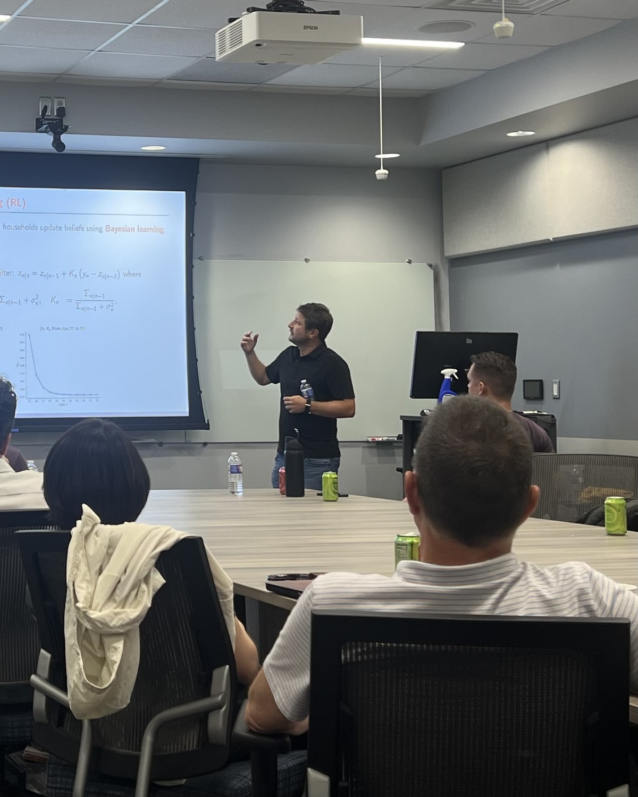
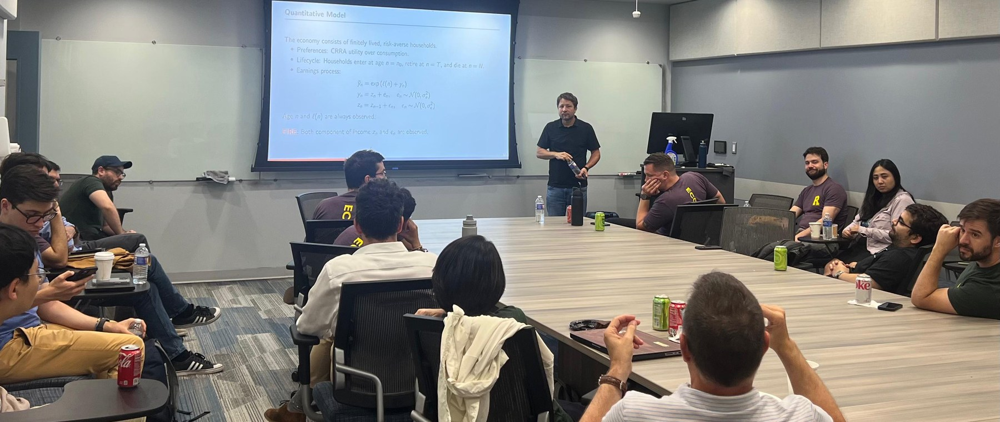

Fleeting Forbearance in a World of Persistent Financial Distress
Macroeconomics · Finance · Growth
Juan M.
Sánchez
Senior Economic Policy Advisor II
Federal Reserve Bank of St. Louis
My research studies household financial distress, firm dynamics and productivity, credit markets, macro-finance, sovereign debt, and quantitative macroeconomics. I also teach Quantitative Macro in the Ph.D. program at Washington University in St. Louis.

Presenting research at the Stockman Conference at the University of Rochester.
Work in Progress
Current projects.
Debt Maturity and Market Timing
Debt, Distress, and Default Across Countries
Cash is King
Publications
Journal articles.
From Population Growth to TFP Growth
Policy Rules and Large Crises in Emerging Markets
Domestic Policies and Sovereign Default
The Effects of Macroeconomic Shocks: Household Financial Distress Matters
Evergreening
Financing Ventures
Improving Sovereign Debt Restructurings
Sovereign Debt Restructurings
Designing Unemployment Insurance for Developing Countries
News, Debt Maturity, and Sovereign Default
The Persistence of Financial Distress
Natural Resources and Global Capital Misallocation
Investment and Bilateral Insurance
Sovereign Default and Maturity Choice
Bankruptcy and Delinquency in a Model of Unsecured Debt
The IT Revolution and the Unsecured Credit Market
Revisiting the Behavior of Small and Large Firms during the 2008 Financial Crisis
Why Doesn’t Technology Flow from Rich to Poor Countries?
Mortgage Defaults
Labor Market Upheaval, Default Regulations, and Consumer Debt
Quantifying the Impact of Financial Development on Economic Development
Financing Development: The Role of Information Costs
Fiscal Policy and Default Risk in Emerging Markets
Unemployment Insurance with a Hidden Labor Market
Optimal State-Contingent Unemployment Insurance
Teaching
Washington University in St. Louis.

Econ 8240: Quantitative Macro
Ph.D. course in modern quantitative macroeconomics · 2018–Present
Money and Banking
Undergraduate course · 2013–2016
Contact
Professional information and links.
Juan M. Sánchez
Federal Reserve Bank of St. Louis
One Federal Reserve Bank Plaza
St. Louis, MO 63102